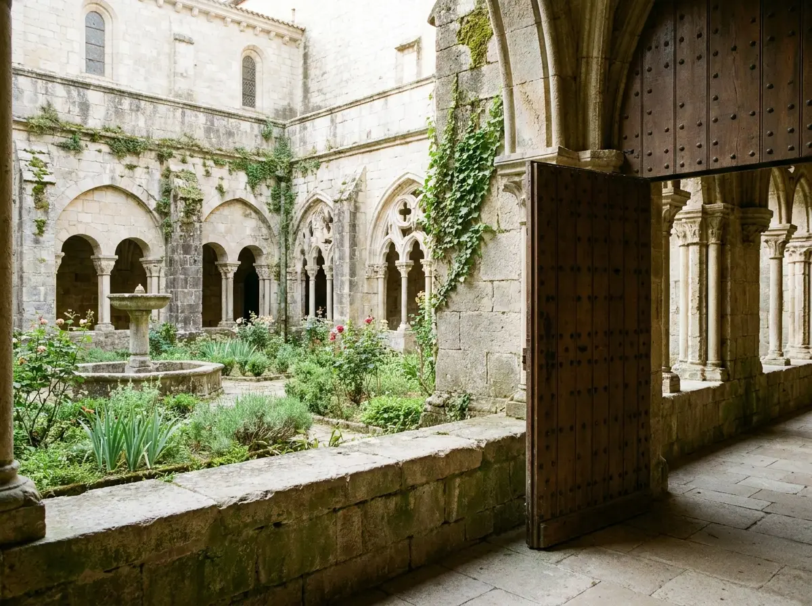
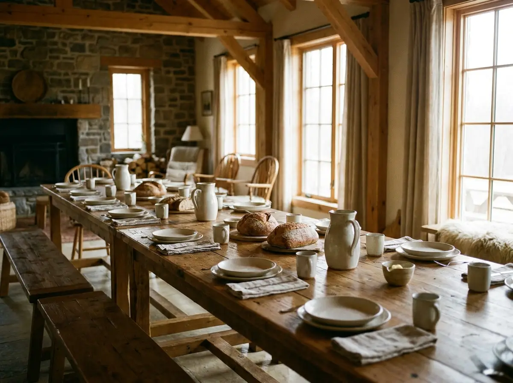

Nous sommes deux à trois familles, avec d'autres en réflexion, et un prêtre qui chemine à nos côtés sans engagement pris à ce jour. Le projet est très en amont : nous n'avons pas encore de lieu, pas de statut juridique arrêté, pas de communauté constituée. Nous avons une conviction simple : un lieu de l'Église laissé vide ne demande pas d'être préservé, mais d'être habité, une présence, un entretien, une activité, une porte ouverte. C'est cette vie que nous voulons offrir, humblement et sous l'autorité de l'Église.
Une vie de prière, au quotidien
Nous voulons que chaque journée commence par la messe et un temps d'adoration, et que le reste s'organise autour : le travail, les repas partagés, les enfants qui grandissent, la porte ouverte à qui passe.
Nous ne cherchons pas à inventer une spiritualité nouvelle ni à porter un charisme particulier. Nous voulons vivre l'Évangile, simplement, dans un lieu de l'Église, et le faire assez sérieusement pour que cela se voie.
Un lieu de l'Église ne se sauve pas en le gardant fermé, mais en y remettant une vie.
Envoyés, pas installés
Ce désir n'a de sens que porté en Église. Nous ne voulons pas d'un lieu à nous, gouverné par nous : nous voulons être envoyés, reconnus, et repris si besoin.
C'est pourquoi, le jour où un lieu se prêterait à notre présence, nous ne demanderions qu'à nous le voir confier, jamais donner, selon la forme que l'Église jugerait juste : une convention, un prêt à usage, un bail. Le lieu resterait ce qu'il est, et pourrait, à tout moment, revenir à ceux qui nous l'auraient confié. Nous ne demandons aucune subvention à l'Église, et ne ferions courir aucun risque financier au lieu qui nous accueillerait : c'est notre travail, et l'activité du lieu, qui doivent nous faire vivre.


Une vie concrète, qui redonne de la tenue au lieu
Concrètement : la messe et l'adoration chaque jour, le travail qui fait vivre le lieu et l'entretient, les repas pris ensemble, des familles qui y habitent et dont les enfants grandissent au rythme de la prière, un accueil simple pour les pèlerins et les groupes de passage. Nous voulons aussi qu'un lieu fatigué ou laissé à l'abandon retrouve de la tenue et de la vie, qu'il redevienne un endroit où l'on a envie d'entrer.
Car ce n'est pas du bénévolat. Les familles qui viendront ne donneront pas leur temps libre : elles y bâtiront leur vie. Le lieu et son activité doivent pouvoir les faire vivre dignement, par un travail vrai et justement rémunéré.
Rien d'extraordinaire dans le principe. Mais une vie chrétienne prise au sérieux, dans un lieu qui reprend vie, cela se voit.
Des garde-fous contre toute dérive
Nous savons ce qui peut faire glisser une communauté vers l'entre-soi ou l'emprise, l'un de nous l'a vu de l'intérieur. C'est pourquoi nous voulons, dès le premier jour, nous en prémunir par des règles claires :
- Ancrés dans l'Église locale, la messe du dimanche à la paroisse, avec tout le monde, jamais repliés sur notre seule chapelle. Une communauté ouverte, pas un monde à part.
- Le gouvernement séparé de l'accompagnement des âmes, celui qui accompagne spirituellement ne gouverne pas ; chacun reste libre de son confesseur et de son accompagnateur, au dehors s'il le souhaite.
- Une gouvernance collégiale, à mandats révisables, pas de figure unique et inamovible ; des décisions prises ensemble et rendues à l'autorité de l'Église.
- Chacun libre de ses biens et de son départ, pas de mise en commun des patrimoines, aucune dépendance qui enferme ; on peut partir sans rupture ni pression.
- Des comptes transparents, ouverts au regard et au contrôle de l'Église.
- Fidèles au magistère, sans doctrine privée, aucune spiritualité personnelle érigée en règle du lieu ; c'est l'Église qui discerne, jamais nous seuls.
Ces garde-fous ne sont pas une contrainte qu'on nous impose : ils sont les nôtres, et nous y tenons.
Ce que nous cherchons
Concrètement, nous cherchons un lieu. Un lieu de l'Église, une abbaye, un monastère, un sanctuaire, une grande maison, assez vaste pour qu'une communauté y vive et y accueille. Si possible un lieu qui porte déjà une activité, une exploitation capable de le faire vivre, sur laquelle notre vie pourrait se greffer plutôt que de tout bâtir de zéro.
Nous le cherchons sous l'autorité de l'Église, et sans jamais chercher à le posséder.
Si vous connaissez un tel lieu, une communauté qui cherche un renfort, ou simplement quelqu'un vers qui nous tourner, que vous soyez évêque, prêtre, ou touché par ce que nous portons, une porte que vous nous ouvririez peut être un commencement.
Si ce que vous venez de lire fait écho à un lieu, à une communauté, ou simplement à une espérance que vous portez, nous serions heureux d'échanger.
Écrire à Lumignis
equipe.ignisofficiel@gmail.com